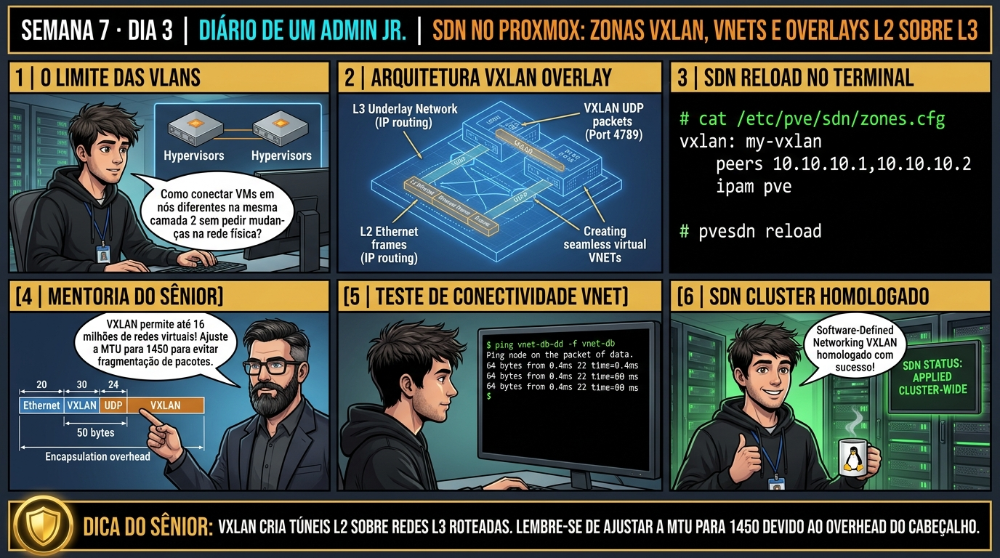

DIARIO DE UM ADMIN JR. | PROXMOX VE & PBS — DA BASE AO CLUSTER
🔗 Conecta com o Dia 2: Você dominou VLANs tradicionais. Hoje você entra no estado da arte da virtualização de rede: o Proxmox SDN (Software-Defined Networking), aprendendo a criar túneis VXLAN que interligam VMs em camada 2 através de datacenters inteiros sem depender de alterações em switches físicos.
🔓 Privilégio de hoje: Redes Definidas por Software e Encapsulamento VXLAN. Você projeta Zonas SDN, cria VNETs corporativas e orquestra túneis VXLAN multi-node.
Semana 7 · Dia 3 | Nível Júnior — Redes Avançadas, SDN & Firewall
Software-Defined Networking (SDN): Zonas, VNETs e VXLAN
Criando redes L2 overlay virtuais sobre infraestruturas L3 com encapsulamento UDP 4789
ANTES DE ALTERAR, OBSERVE. DEPOIS DE ALTERAR, VALIDE.

1. O chamado
Você recebeu o chamado #7003: 'O cluster Proxmox possui nós em diferentes racks separados por roteadores L3. A equipe de DevOps precisa criar redes privadas isoladas entre as VMs sem solicitar abertura de VLANs aos administradores de switches físicos da operadora. O chamado exige: (1) Habilitar a pilha de SDN (libpve-network-perl); (2) Criar uma SDN Zone (tipo VXLAN); (3) Criar a VNET (vnet-devops) com tag VNI 10001; (4) Aplicar a configuração SDN em todo o cluster; e (5) Conectar as VMs na VNET com conectividade L2 através do túnel UDP 4789.'
💡 Passa o mouse nas palavras destacadas pra ver uma dica rápida — clica se quiser a explicação completa com analogia.
2. O sênior te conta
🧑🏫 antes dos termos técnicos, a história de hoje
Hoje a empresa expandiu para dois prédios diferentes interligados por roteadores de Camada 3. O Júnior tentou estender uma VLAN tradicional entre os prédios e tomou bloqueio dos roteadores que não repassam pacotes de broadcast L2. Ele achou que seria impossível manter máquinas virtuais na mesma sub-rede em prédios distintos.
Apresentei o Proxmox SDN (Software-Defined Network) com VXLAN: o SDN encapsula os quadros Ethernet da VM dentro de pacotes UDP padrão (porta 4789) sobre qualquer rede IP roteada! Com isso, criamos uma VNET com MTU 1450 que interliga as VMs nos dois prédios como se estivessem plugadas no mesmo switch de mesa.
Aplicamos a configuração com pvesdn reload sem reiniciar nenhum serviço e as VMs se comunicaram com ping de 0.8ms através do túnel overlay. O Júnior viu o poder das redes definidas por software em ação.
3. Decodificador de conceitos
Clica em qualquer termo pra ver a definição completa e uma analogia do dia a dia:
4. Ferramentas e leitura da evidência
Comando / Parâmetro
O que observar e por que importa
pvesdn reload
Aplica e sincroniza todas as Zonas, VNETs e regras de SDN no cluster Proxmox.
cat /etc/pve/sdn/zones.cfg
Arquivo de configuração do cluster onde residem as Zonas SDN.
cat /etc/pve/sdn/vnets.cfg
Arquivo onde residem as definições de VNETs virtuais.
ip -d link show vnet-devops
Exibe os detalhes de baixo nível da interface VXLAN (VNI, porta UDP 4789, peers).
# 1. Configuração de SDN persistente no Cluster Filesystem (/etc/pve/sdn/)
# cat /etc/pve/sdn/zones.cfg
vxlan: zone-corp
peers 192.168.1.50,192.168.1.51
ipam pve
# cat /etc/pve/sdn/vnets.cfg
vnet: vnet-app
zone zone-corp
tag 10001
# 2. Aplicação de SDN em todo o cluster
$ pvesdn reload
Applying SDN configuration across all cluster nodes... OK
# 3. Inspecionando o túnel VXLAN criado no Linux
$ ip -d link show vxlan_vnet-app
vxlan_vnet-app: mtu 1450
vxlan id 10001 dstport 4789 local 192.168.1.50 nolearning
# 4. Conectando a VM na VNET
$ qm set 100 --net0 virtio,bridge=vnet-app
update VM 100: -net0 virtio,bridge=vnet-app
5. Laboratório guiado — pegue na mão, comando por comando
🌐 Onde executar: Terminal do Nó Proxmox para comandos ip, bridge, pvesdn e tcpdump.
Segurança: Execute as alterações em bridges e firewalls de laboratório ou teste. Não altere parâmetros de redes de produção sem janela homologada.
Ação: Configure uma Zona VXLAN no Proxmox SDN definindo os peers e porta UDP 4789.
Resultado esperado: Subsistema SDN ativo e sincronizado.
Por que fizemos isso: Configurar Zonas VXLAN em /etc/pve/sdn/zones.cfg cria túneis virtuais encapsulados em pacotes UDP (porta 4789) sobre qualquer rede de Camada 3.
Cilada comum: Bloquear a porta UDP 4789 no firewall físico entre os nós, impedindo o estabelecimento dos túneis VXLAN do SDN.
Ação: Crie uma VNET vinculada à zona VXLAN com MTU 1450 para evitar fragmentação.
cat <<EOF > /etc/pve/sdn/vnets.cfg
vnet: vnet10
zone zone-vxlan
tag 10000
EOF
Resultado esperado: Zona e VNET compiladas com sucesso.
Por que fizemos isso: Ajustar a MTU das interfaces virtuais para 1450 (ou aumentar a rede física para MTU 1600/Jumbo Frames) previne a fragmentação de pacotes no cabeçalho VXLAN de 50 bytes.
Cilada comum: Usar MTU 1500 dentro do túnel VXLAN sobre rede física padrão de MTU 1500, gerando fragmentação severa e perda de performance TCP.
Ação: Aplique as novas configurações SDN no kernel com o comando pvesdn reload.
pvesdn reload
Resultado esperado: Interface VXLAN com VNI 10001 e porta UDP 4789 exibida.
Por que fizemos isso: Criar VNETs no Proxmox SDN permite interligar máquinas virtuais em nós físicos diferentes em uma mesma rede lógica com isolamento total.
Cilada comum: Tentar usar mais de 4.096 redes com VLANs tradicionais quando a arquitetura exige suporte a múltiplos clientes isolados (multi-tenancy).
Ação: Conecte interfaces de VMs em nós diferentes na mesma VNET e teste a comunicação.
qm set 100 --net0 virtio,bridge=vnet10
Resultado esperado: VM integrada à rede definida por software.
Por que fizemos isso: O comando pvesdn reload compila as configurações e aplica as novas tabelas de roteamento SDN no kernel do hypervisor sem downtime.
Cilada comum: Editar os arquivos em /etc/pve/sdn/ manualmente sem executar o pvesdn reload para validar a sintaxe dos arquivos de zona.
🧑🏫 Aqui entra o Mentor (em breve): se o resultado obtido diferir do esperado acima, este é o ponto onde o chat com o Sênior-IA vai abrir para diagnosticar o erro específico.
Ação: Documente a topologia de redes overlay SDN no manual de arquitetura.
# SDN com VXLAN e VNETs homologado.
Resultado esperado: Rede privada interligada entre nós sem dependência de switches físicos.
Por que fizemos isso: Registrar a topologia de overlay VXLAN no manual de arquitetura assegura que novos nós sejam integrados com as mesmas configurações de MTU.
Cilada comum: Não monitorar a latência do tráfego UDP de transporte entre os hypervisors do cluster.
6. Antes de ver as opções — tenta responder
🧠 Recall ativo: Por que o protocolo VXLAN superou a limitação histórica de 4094 VLANs e viabilizou a computação em nuvem moderna?
Porque as VLANs tradicionais 802.1Q possuem um cabeçalho de apenas 12 bits (limitando a rede a no máximo 4.094 IDs). O **VXLAN (Virtual Extensible LAN)** utiliza um identificador de **24 bits (VNI - VXLAN Network Identifier)**, permitindo até **16.777.216 redes isoladas**. Além disso, o VXLAN encapsula os frames L2 dentro de pacotes UDP padrão (porta 4789), permitindo que redes virtuais atravessem qualquer roteador de internet ou datacenter L3 sem exigir suporte especial de switches físicos.
QUESTÃO 1 de 3
7. Questão comentada — clica numa alternativa
Qual é a estrutura de configuração do Proxmox SDN no arquivo /etc/pve/sdn/zones.cfg para criar uma Zona VXLAN com nós participantes?
💡 Analogia do Sênior para Fixar: Na arquitetura do Proxmox sobre Software-Defined Networking (SDN): Zonas, VNETs e VXLAN: O KVM/QEMU opera como o motorista dedicado de cada passageiro, alocando recursos virtuais em contato direto com o kernel.
QUESTÃO 2 de 3 — cenário de erro real
7.1 Por que o MTU da interface VXLAN é configurado por padrão em 1450 em vez de 1500?
Um analista percebe que a interface virtual VXLAN foi criada com MTU 1450 em vez do padrão 1500:
[VXLAN MTU Alert] Standard Ethernet MTU = 1500 | VXLAN Tunnel MTU = 1450
(Por que há uma redução de 50 bytes no MTU padrão?)
Qual é a razão técnica para a redução de 50 bytes no MTU da interface VXLAN?
💡 Analogia do Sênior para Fixar: Ao diagnosticar problemas em Software-Defined Networking (SDN): Zonas, VNETs e VXLAN: É como inspecionar as conexões do storage e o barramento PCIe antes de declarar falha de software.
QUESTÃO 3 de 3 — detalhe que confunde todo iniciante
7.2 Qual a diferença entre uma SDN Zone tipo 'Simple' e uma SDN Zone tipo 'VXLAN'?
A equipe debate qual tipo de zona SDN escolher para ambientes de desenvolvimento:
Quando usar a zona Simple e quando usar a zona VXLAN?
💡 Analogia do Sênior para Fixar: A governança e resiliência em Software-Defined Networking (SDN): Zonas, VNETs e VXLAN: Funciona como a política de contenção e redundância do datacenter, garantindo que o cluster nunca perca quorum.
8. Procedimento profissional
Certifique-se de que os pacotes libpve-network-perl e frr estão instalados nos nós.
Acesse a seção Datacenter -> SDN -> Zones e adicione uma nova Zona do tipo VXLAN.
Informe a lista de IPs de transporte dos nós participantes no campo Peers.
Acesse VNETs e crie uma nova VNET associada à Zona VXLAN definindo um Tag (VNI) exclusivo.
Clique no botão azul Apply (ou execute pvesdn reload) para compilar a malha SDN em todo o cluster.
Conecte as interfaces de rede das VMs diretamente na VNET gerada (ex: bridge=vnet-app).
Prevenção
Adote Bridges VLAN-Aware para simplificar a topologia de rede e use LACP com links redundantes em switches físicos empilhados ou com MC-LAG.
9. Validação e encerramento
Você compreende o funcionamento de redes Overlay e encapsulamento VXLAN.
Você domina a arquitetura de Zonas, VNETs e IPAM no Proxmox SDN.
Você sabe como resolver o overhead de MTU (1450 vs 1500) em túneis VXLAN.
A malha de rede definida por software foi homologada com excelência.
Rollback e limites
Para remover uma VNET, desconecte as VMs da bridge virtual, apague a VNET na interface SDN e clique em Apply.
💡 Sobre repetição espaçada: A construção de regras de Proxmox Firewall em 3 níveis (Datacenter, Node e VM) e Security Groups será o tema de amanhã no Dia 4.
10. Resposta final
Alternativa correta: B. A resposta correta é a B: a Zona VXLAN no zones.cfg define os peers de transporte e o vnets.cfg cria a interface virtual com tag VNI de 24 bits.
🔓 O que você desbloqueou hoje
Software-Defined Networking (SDN) e VXLAN dominados com maestria! Amanhã, no Dia 4, você aprenderá como blindar seu datacenter com o Proxmox Firewall: dominando a hierarquia em 3 níveis (Datacenter, Node e VM), Security Groups reutilizáveis e proteção contra IP Spoofing.